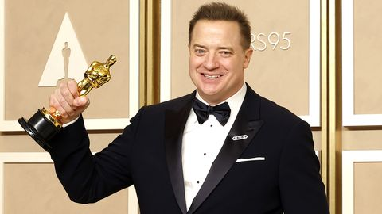
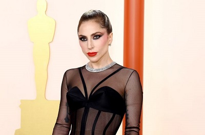
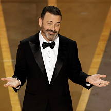

Brendan Fraser
La victoria de Brendan Fraser como mejor actor por "The Whale" no fue una total sorpresa,
pero de todos modos fue una victoria deliciosa. El actor había sido el favorito junto con la
estrella de "Elvis", Austin Butler, para llevarse a casa el Oscar, y Fraser parecía conmocionado
y humillado por la victoria. Agradeció a los sospechosos habituales, incluidos su familia, agente y estudio.
Fraser tuvo un reconocimiento especial para su coprotagonista, Hong Chau.
"Quiero decirles que solo las ballenas pueden nadar en la profundidad del talento de Hong Chau", dijo.

Lady Gaga
Lady Gaga subió al escenario para realizar una emotiva y conmovedora interpretación de su canción "Hold My Hand" durante la noche del domingo de los Oscar. La canción, de "Top Gun: Maverick", está nominada al Oscar en la categoría de mejor canción original. Gaga no se maquilló y usó una camiseta y jeans para la presentación. La cantante recibió una ovación de pie.

Jimmy Kimmel
A un poco más de la mitad de la ceremonia de los Oscar, el presentador Jimmy Kimmel volvió a mencionar la bofetada y dijo que los espectadores en este punto podrían "extrañar un poco la bofetada". Kimmel, haciendo referencia al incidente de Will Smith del año pasado, bromeaba diciendo que la multitud probablemente necesitaba algo de emoción ya que quedaba mucho por delante. Varios de los principales premios aún no se han anunciado casi dos horas después del espectáculo.